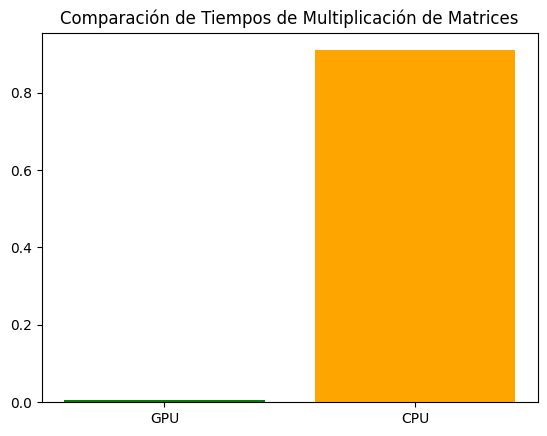

PyCUDA_multiplicar_matrices#
Instalación de la librería#
!pip install pycuda
Requirement already satisfied: pycuda in /usr/local/lib/python3.10/dist-packages (2023.1)
Requirement already satisfied: pytools>=2011.2 in /usr/local/lib/python3.10/dist-packages (from pycuda) (2023.1.1)
Requirement already satisfied: appdirs>=1.4.0 in /usr/local/lib/python3.10/dist-packages (from pycuda) (1.4.4)
Requirement already satisfied: mako in /usr/local/lib/python3.10/dist-packages (from pycuda) (1.3.0)
Requirement already satisfied: platformdirs>=2.2.0 in /usr/local/lib/python3.10/dist-packages (from pytools>=2011.2->pycuda) (4.0.0)
Requirement already satisfied: typing-extensions>=4.0 in /usr/local/lib/python3.10/dist-packages (from pytools>=2011.2->pycuda) (4.5.0)
Requirement already satisfied: MarkupSafe>=0.9.2 in /usr/local/lib/python3.10/dist-packages (from mako->pycuda) (2.1.3)
Importando las librerías#
# Para inicializar automáticamente PyCUDA y la GPU
import pycuda.autoinit
# Para interactuar directamente con el controlador de la GPU
import pycuda.driver as drv
# Para manipular arrays y operaciones en la CPU
import numpy as np
# Para compilar y cargar módulos CUDA en la GPU
from pycuda.compiler import SourceModule
# Para medir los tiempos
import time
# Para generar gráficos
import matplotlib.pyplot as plt
Verificación de los recursos de GPU#
drv.init()
print("%d dispositivo(s) encontrado." % drv.Device.count())
for i in range(drv.Device.count()):
dev = drv.Device(i)
print("\n Dispositivo #%d: %s" % (i, dev.name()))
print(" Memoria Total: %s GB" % (dev.total_memory() // (1024 * 1024 * 1024)))
print(" Capacidad de Computación: %d.%d" % dev.compute_capability())
1 dispositivo(s) encontrado.
Dispositivo #0: Tesla T4
Memoria Total: 14 GB
Capacidad de Computación: 7.5
Matrices a multiplicar#
# Establece la semilla para reproducibilidad
np.random.seed(42)
# Genera dos matrices aleatorias enteras entre 0 y 10 en la CPU (host)
a = np.random.randint(0, 11, size=(100, 100)).astype(np.float32)
b = np.random.randint(0, 11, size=(100, 100)).astype(np.float32)
# Imprime las matrices originales
print("Matriz 'a':")
print(a)
print("\nMatriz 'b':")
print(b)
Matriz 'a':
[[ 6. 3. 10. ... 0. 10. 4.]
[ 9. 6. 9. ... 4. 0. 0.]
[ 2. 1. 4. ... 6. 2. 0.]
...
[ 6. 8. 5. ... 1. 9. 7.]
[ 5. 6. 6. ... 9. 5. 0.]
[ 8. 2. 4. ... 9. 9. 1.]]
Matriz 'b':
[[ 0. 4. 0. ... 2. 10. 4.]
[ 0. 2. 3. ... 4. 3. 9.]
[ 4. 3. 2. ... 5. 6. 1.]
...
[ 4. 6. 4. ... 2. 3. 9.]
[ 5. 4. 2. ... 3. 1. 3.]
[ 1. 0. 10. ... 7. 9. 6.]]
Usando la GPU#
def matrix_multiply_gpu_block_size(a, b, block_size=(32, 32, 1)):
# Verifica si las matrices son compatibles para la multiplicación
if a.shape[1] != b.shape[0]:
raise ValueError("Las dimensiones de las matrices no son compatibles para la multiplicación.")
# Transfiere las matrices a la GPU
a_gpu = drv.mem_alloc(a.nbytes)
b_gpu = drv.mem_alloc(b.nbytes)
drv.memcpy_htod(a_gpu, a)
drv.memcpy_htod(b_gpu, b)
# Define un módulo CUDA con un kernel para multiplicar matrices
mod = SourceModule("""
__global__ void matrix_multiply(float *result, float *a, float *b, int N, int M, int K)
{
int row = threadIdx.y + blockIdx.y * blockDim.y;
int col = threadIdx.x + blockIdx.x * blockDim.x;
int idx = row * K + col;
result[idx] = 0;
for (int k = 0; k < M; ++k)
result[idx] += a[row * M + k] * b[k * K + col];
}
""")
# Obtiene el kernel de multiplicación de matrices
matrix_multiply_kernel = mod.get_function("matrix_multiply")
# Configura las dimensiones del bloque y de la cuadrícula
grid_size = (int(np.ceil(a.shape[0] / block_size[0])),
int(np.ceil(b.shape[1] / block_size[1])))
# Crea una matriz en la GPU para almacenar el resultado
result_gpu = np.zeros((a.shape[0], b.shape[1]), dtype=np.float32)
# Llama al kernel en la GPU para multiplicar las matrices
matrix_multiply_kernel(
drv.Out(result_gpu), a_gpu, b_gpu,
np.int32(a.shape[0]), np.int32(a.shape[1]), np.int32(b.shape[1]),
block=block_size, grid=grid_size)
return result_gpu
# Mide el tiempo de inicio
start_time_gpu = time.time()
# Realiza la multiplicación matricial en la GPU
result_gpu = matrix_multiply_gpu_block_size(a, b, block_size=(32, 32, 1))
# Mide el tiempo de finalización
end_time_gpu = time.time()
# Imprime el resultado de la multiplicación matricial en la GPU
print("\nResultado de la multiplicación matricial en la GPU:")
print(result_gpu)
# Calcula el tiempo transcurrido en la GPU
elapsed_time_gpu = end_time_gpu - start_time_gpu
print(f"\nTiempo transcurrido en la GPU: {elapsed_time_gpu} segundos")
Resultado de la multiplicación matricial en la GPU:
[[2496. 2503. 2628. ... 2245. 2584. 2336.]
[2684. 2570. 2738. ... 2241. 2662. 2239.]
[2610. 2562. 2521. ... 2106. 2434. 2091.]
...
[2437. 2503. 2682. ... 2406. 2745. 2533.]
[2717. 2496. 2756. ... 2290. 2646. 2394.]
[2575. 2491. 2694. ... 2514. 3043. 2644.]]
Tiempo transcurrido en la GPU: 0.005822420120239258 segundos
Usando la CPU#
def multiply_matrices_with_loops(a, b):
rows_a, cols_a = a.shape
rows_b, cols_b = b.shape
if cols_a != rows_b:
raise ValueError("Las dimensiones de las matrices no son compatibles para la multiplicación.")
result = np.zeros((rows_a, cols_b), dtype=np.float32)
for i in range(rows_a):
for j in range(cols_b):
for k in range(cols_a):
result[i, j] += a[i, k] * b[k, j]
return result
# Mide el tiempo de inicio
start_time_cpu = time.time()
# Realiza la multiplicación matricial en la CPU con bucles
result_cpu = multiply_matrices_with_loops(a, b)
# Mide el tiempo de finalización
end_time_cpu = time.time()
# Imprime el resultado de la multiplicación matricial en la CPU
print("\nResultado de la multiplicación matricial en la CPU:")
print(result_cpu)
# Calcula el tiempo transcurrido en la CPU
elapsed_time_cpu = end_time_cpu - start_time_cpu
print(f"\nTiempo transcurrido en la CPU: {elapsed_time_cpu} segundos")
Resultado de la multiplicación matricial en la CPU:
[[2496. 2503. 2628. ... 2245. 2584. 2336.]
[2411. 2632. 2443. ... 2241. 2662. 2239.]
[2439. 2274. 2539. ... 2106. 2434. 2091.]
...
[2746. 2584. 2919. ... 2406. 2745. 2533.]
[2578. 2616. 2737. ... 2290. 2646. 2394.]
[3018. 2928. 2828. ... 2514. 3043. 2644.]]
Tiempo transcurrido en la CPU: 0.909132719039917 segundos
Comparando los tiempos#
# Nombres de las operaciones
labels = ['GPU', 'CPU']
# Valores de tiempo
values = [elapsed_time_gpu, elapsed_time_cpu]
# Graficar en barras con escala logarítmica en el eje y
plt.bar(labels, values, color=['green', 'orange'])
plt.title('Comparación de Tiempos de Multiplicación de Matrices')
plt.show()
